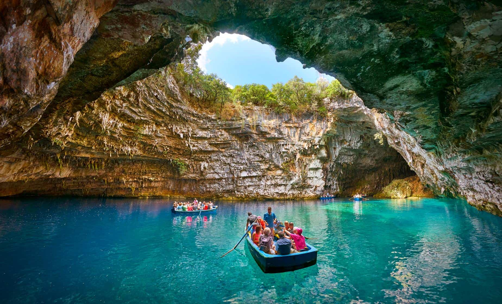

Caverna Melissani, Kefalonia, Grécia
Bateu aquela vontade de conhecer, né? Com água limpa e formação rochosa surpreendente, as lendas locais dizem que esta região é protegida pelos deuses gregos e é para poucas pessoas.
O mundo é cheio de paisagens bonitas e muitas desconhecidas para os viajantes de primeira viagem. Venha conferir algumas paisagens de cair o queixo.
Bateu aquela vontade de conhecer, né? Com água limpa e formação rochosa surpreendente, as lendas locais dizem que esta região é protegida pelos deuses gregos e é para poucas pessoas.
Conhecida popularmente como Sakura, esta flor é símbolo do país. Seu significado é tão intenso que os japoneses a respeitam como a própria bandeira ou o hino nacional. Impossível visitar o Japão sem ver uma cerejeira!
O país possui inúmeros mosteiros, mas um deles resume a história do budismo butanês: o Ninho do Tigre. O santuário de peregrinação guarda um pouco da história, das lendas e das tradições do país.

Esta é uma estrada que liga o norte ao sul da Islândia. Pelo caminho, belas vistas podem ser admiradas por quem anda pela região.

A maior cadeia montanhosa do mundo está localizada entre a planície indo-gangética, ao sul, e o planalto tibetano, ao norte, atingindo a Índia, China, Butão, Nepal e Paquistão. Até o cachorro da foto ficou impressionado com a vista.
Este passeio exige disposição e preparo: são 3.922 degraus pelas colinas da montanha Puukeahiakahoe, a mais de 850 metros de altitude. Mas o que importa mesmo é a vista indescritível como recompensa.
Com 552 m de altitude, este local permite que os visitantes tenham uma visão completa dos arranha-céus da ilha. Um visual de encher os olhos, principalmente a noite.
Projetada sobre um abismo, a pedra Trolltunga fica a 700 metros acima do lago Ringedalsvatnet e proporciona uma das mais incríveis experiências naturais ao redor do mundo.
Reconheceu a vista? Este é um dos morros mais conhecidos do mundo, onde está a estátua do Cristo Redentor, de 38 m de altura. Uma paisagem paradisíaca para brasileiros e estrangeiros

Localizada na margem oriental do rio Irauádi, esta cidade é um espetáculo no Sudeste Asiático. Parte da beleza vem das estupas, construções budistas que serviam para conservar relíquias ligadas ao Buda.